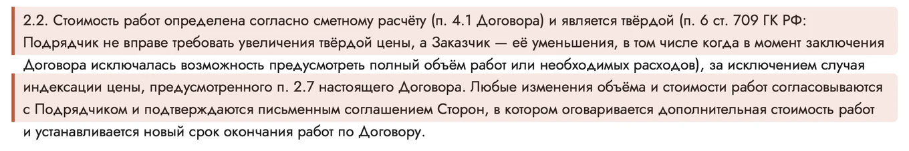
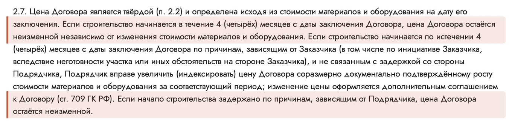

Шапка про цену — 10 ярких вариантов
Возражение «цена в процессе вырастет». Отвечаем договором, а не обещанием: твёрдая цена (п. 2.2), условие про 4 месяца (п. 2.7), допработы только по допсоглашению (п. 2.5) и смета по строкам до договора. Текст везде на сплошном цвете или плотном затемнении.
Советую: 5 — три замка: запоминается и вмещает все три пункта; 2 — вопрос-страх: человек узнаёт свою мысль и сразу видит ответ; 9 — сам договор с подсветкой: доказательство сильнее слов.
Риск на сайте сейчас. Первый слайд главной обещает, что цена не меняется до конца стройки, — без условия про 4 месяца из п. 2.7. На странице «Пример сметы» то же: «цена не меняется, даже если материалы подорожают». Правка первого слайда — вариант 10.
Синяя панель с номерами пунктов
Приём: крупные номера пунктов- Идея
- Три номера пунктов крупно: цена держится не на обещании, а на договоре.
- Почему продаёт
- Крупные цифры цепляют взгляд, как статистика, а номер пункта можно найти и проверить. Условие про 4 месяца стоит прямо в строке.
- Риск
- Без подписей номера ничего не значат — подписи должны остаться короткими.
Цену дома держат три пункта договора
Вопрос и ответ пунктом
Приём: вопрос-страх- Идея
- Шапка начинается с вопроса, который крутится в голове у покупателя, а отвечает на него пункт 2.7.
- Почему продаёт
- Человек узнаёт свой страх и читает дальше. Ответ — не «не волнуйтесь», а номер пункта и честное условие, поэтому ему верят.
- Риск
- Слово «подорожают» в заголовке сначала напрягает — ответ должен стоять рядом и крупно.
А если материалы подорожают?
Цена не вырастет, если стройка начнётся в течение 4 месяцев после подписания. Даже если материалы за это время подорожают.
Начнём позже по причинам на вашей стороне — например, участок не готов, — цену могут проиндексировать. Это условие тоже записано в пункте 2.7.
Смета на оранжевом
Приём: смета на экране- Идея
- Показать саму смету по строкам и перечёркнутую строку «прочие работы», которой в ней нет.
- Почему продаёт
- Страх «доплатите» живёт в размытой строке, а здесь видна каждая позиция. Смета до договора — доказательство, которое можно проверить.
- Риск
- Цифры из примера могут принять за цену дома — поэтому над таблицей подпись «Пример сметы, цифры условные».
В смете нет строки «прочие работы»
Той самой, под которую обычно и уходит подорожание. Каждая позиция — отдельно: материал, марка, количество и цена.
Полная смета — от 120 позиций — приходит до подписания договора.
Обычно и у нас
Приём: контраст- Идея
- Две колонки: как цена растёт по ходу стройки в знакомых историях и что про это записано в нашем договоре.
- Почему продаёт
- Сравнение объясняет без лишних слов: слева истории знакомых, справа пункты договора. Вывод человек делает сам.
- Риск
- Колонка «Обычно» не должна звучать как упрёк конкретным компаниям — только общие истории.
Доплаты по ходу стройки: как бывает и как у нас
Обычно
- В смете строка «прочие работы»
- «Материалы подорожали» — доплатите
- «Нашлись допработы» — доплатите по ходу
У нас
- Смета по строкам — до договора
- Цена твёрдая: мы не вправе требовать большеп. 2.2
- Материалы подорожали — цена та же, если стройка началась в течение 4 месяцев после подписанияп. 2.7
- Допработы — только по допсоглашению с вашей подписьюп. 2.5
Замки на тонированном фото
Приём: три замка- Идея
- Три замка — три пункта договора: твёрдая цена, условие про 4 месяца и допработы только с вашей подписью.
- Почему продаёт
- Образ замка понятен без объяснений и запоминается. Три коротких довода легко пересказать дома.
- Риск
- Замок — метафора: без номера пункта рядом он выглядит рекламой, поэтому номера обязательны.
Три замка на цене дома
Каждый замок — пункт договора, который вы подпишете.
Мы не вправе требовать больше, чем записано в договоре.
Стройка начнётся в течение 4 месяцев после подписания — цена не вырастет, даже если материалы подорожают.
Допработы — только по подписанному допсоглашению. Без подписи их не делают и не оплачивают.
Опции с галочками
Приём: всё видно заранее- Идея
- Показать механику карточки дома: цена комплектации плюс отмеченные опции — итог виден до договора.
- Почему продаёт
- Страх доплат — это страх неизвестного. Когда человек сам собирает дом и видит итог, неизвестного меньше.
- Риск
- В итоге нет доставки дальше 100 км — подпись «без доставки» убирать нельзя.
Цена дома плюс опции — итог видно заранее
В карточке дома отмечаете нужные опции и сразу видите «Итого с выбранными». Цена фиксируется в договоре до начала работ.
Не вырастет, если стройка начнётся в течение 4 месяцев после подписания, — пункт 2.7 договора.
Две колонки условий
Приём: честные условия- Идея
- Честно разложить по двум колонкам, когда цена остаётся прежней, а когда её могут пересчитать.
- Почему продаёт
- Названное условие снимает подозрение в подвохе: компания сама показывает границу. Сначала выгода, потом условие — спокойным тоном.
- Риск
- Правая колонка может насторожить — на главной лучше вторым слайдом или на странице «Договор».
Когда цена может измениться — и когда нет
Цена не меняется
- Стройка началась в течение 4 месяцев после подписания — даже если материалы подорожалип. 2.7
- Начало стройки задержали мы — цена та жеп. 2.7
- Допработы без подписанного допсоглашения не делают и не оплачиваютп. 2.5
Цена может измениться
- Стройка начинается позже 4 месяцев по причинам на вашей стороне — например, не готов участокп. 2.7
- Индексация — соразмерно подтверждённому документами росту цен на материалы, оформляется допсоглашениемп. 2.7
- Меняется объём работ — только письменным соглашением сторонп. 2.2
Дорога цены
Приём: путь цены- Идея
- Показать путь цены по шагам — смета, договор, старт стройки, оплата — и на каждом шаге то, что её держит.
- Почему продаёт
- Порядок шагов снимает ощущение «а потом начнётся»: на каждом шаге виден пункт договора.
- Риск
- Четыре шага — много текста для первого экрана; подписи шагов — в одну-две строки.
Путь цены — от сметы до последнего платежа
Разработка проектной документации тоже входит в цену договора — пункт 2.8.
- Смета до договораКаждая позиция отдельной строкой — от 120 позиций
- Договор с твёрдой ценойМы не вправе требовать большеп. 2.2
- Старт в течение 4 месяцев после подписанияЦена не вырастет, даже если материалы подорожалип. 2.7
- Оплата по этапамКаждый платёж — с кассовым чеком и актомп. 2.6
Договор с подсветкой
Приём: фрагмент договора- Идея
- Показать сами пункты 2.2 и 2.7, вырезанные из договора, с подсветкой нужных строк.
- Почему продаёт
- Документ убеждает сильнее слов: человек видит формулировку, которую подпишет. Открытость читается как «нам нечего прятать».
- Риск
- Мелкий текст договора на телефоне не прочитать — смысл несёт текст слева, картинка — доказательство.
Не верьте на слово — прочитайте пункты 2.2 и 2.7


Новый текст первого слайда
Приём: малая правка первого слайда- Идея
- Оставить нынешний слайдер и поменять только текст первого слайда: твёрдая цена и условие про 4 месяца.
- Почему продаёт
- Самый быстрый шаг: дизайн прежний, а реклама перестаёт спорить с договором. Слово «твёрдая» сразу объяснено.
- Риск
- Подзаголовок длиннее прежнего — на телефоне займёт четыре-пять строк.
Каркасные дома под ключ с твёрдой ценой
Цена по смете записана в договоре, и требовать больше мы не вправе. Она не вырастет, если стройка начнётся в течение 4 месяцев после подписания.
Заказать звонок